Digital Signal Processing Toolkit
Digital Signal Processing Toolkit
Digital Signal Processing is concerned with the representation of signals by a sequence of numbers or symbols and the processing of these signals. Digital signal processing and analog signal processing are subfields of signal processing. DSP includes subfields audio and speech signal processing, sonar and radar signal processing, sensor array processing, spectral estimation, statistical signal processing, digital image processing, signal processing for communications, control of systems, biomedical signal processing, seismic data processing, etc.
The goal of DSP is usually to measure, filter and/or compress continuous real-world analog signals. The first step is usually to convert the signal from an analog to a digital form, by sampling it using an analog-to-digital converter (ADC), which turns analog signal into a stream of numbers. However, often, the required output signal is another analog output signal, which requires a digital-to-analog converter (DAC). Even if this process is more complex than analog processing and has a discrete value range, the application of computational power to digital signal processing allows for many advantages over analog processing in many applications, such as error detection and correction in transmission as well as data compression.
Signal Statistics
This function calculates the following parameters:
Arithmetic Mean - The sum of the values of a variable divided by the number of values is
called arithmetic mean.
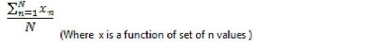
Variance - The calculation of how far values lie from the mean value in any distribution curve is done using variance.
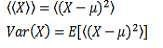
(Where X is any random variable, or E[X] is its mean and Var(X) its variance.)
Mode - The value that occurs most frequently in any distribution curve is called its mode.
RMS - The root mean square, also known as the quadratic mean, is a statistical measure of the magnitude of any varying quantity.
Standard deviation - It measures how much a distribution is spread. It is the square root of variance.
Where x is any random variable, µ or E(x) is its mean and its standard deviation.
Skewness - It is a measure of the asymmetry of the probability distribution of a random variable.
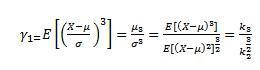
Where x is any random variable, µ or E(x) is mean and is third standardized moment or skewness.
Kurtosis - It is a measure of peakedness of any curve and is normalized form of fourth standardized moment.
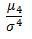is fourth standardized moment.
Median- It is defined as the numeric value separating the higher half of a sample, from the lower half.
Convolution
Convolution - It is a mathematical way of combining two signals to form a third signal,
defined as the integral of the product of the two functions after one is reversed and shifted. Convolution of 2 signals f and g is given as:
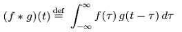
Cross Correlation - In signal processing, cross-correlation is a measure of similarity of two waveforms as a function of a time-lag applied to one of them. For continuous functions, f and g, the cross-correlation is defined as:
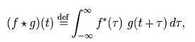
Where f * denotes the complex conjugate off.
Autocorrelation - It is the cross-correlation of a signal with itself. Given a signal f(t), the continuous autocorrelation Rff is most often defined as the continuous cross-correlation integral of f(t) with itself, at lag.
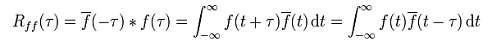
Power Spectrum
Power Spectrum shows frequencies containing the signal´s power, by plotting a distribution of power values as a function of frequency, where "power" is considered to be the average of the signal². For a given signal, the power spectrum gives a plot of the portion of a signal's power (energy
per unit time) falling within given frequency bins. The most common way of generating a power spectrum is by using a discrete Fourier transform, but other techniques such as the maximum entropy method can also be used.
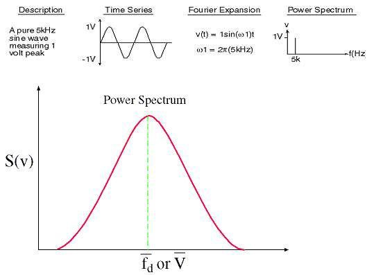
Histogram
Histograms are used to plot density of data, and often for density estimation: estimating the probability density function of the underlying variable. The total area of a histogram used for probability density is always normalized to 1. If the length of the intervals on the x-axis are all 1, then a histogram is identical to a relative frequency plot.
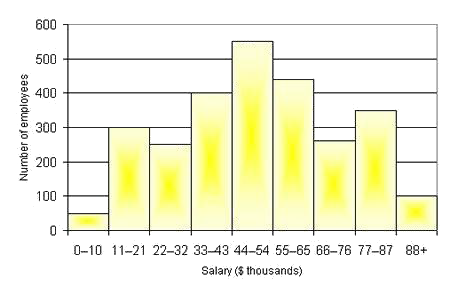
FFT (Fast Fourier Transform)
An FFT computes the DFT and produces exactly the same result as evaluating the DFT definition directly; the only difference is that an FFT is much faster. The basic idea is to break up a transform of length into two transforms of length using the identity.
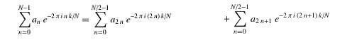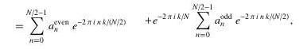
Since the fourier transform gives the information about the frequency component of any signal, it is used for finding out what are the frequencies present in the signal if the signal is stationary i.e. the frequency component of the signal is not changing with time.
DCT (Discrete Cosine Transform)
A discrete cosine transform (DCT) expresses a sequence of finitely many data points in terms of a sum of cosine functions oscillating at different frequencies. DCTs are important to numerous
applications in science and engineering, from lossy compression of audio and images (where small high-frequency components can be discarded), to spectral methods for the numerical solution of partial differential equations. The use of cosine rather than sine functions is critical in these applications: for compression, it turns out that cosine functions are much more efficient (as explained
below, fewer are needed to approximate a typical signal), whereas for differential equations the cosines express a particular choice of boundary conditions.
DST- The Discrete Sine Transform DST {X} of a sequence X is defined by the following equations:
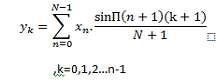 Where N is the length of the input sequence X,xn is the nth element of the input sequence X, and yk is the kth element of the output sequence DST {X}.
Hilbert Transform
In mathematics and in signal processing, the Hilbert transform is a linear operator which takes a function, u(t), and produces a function, H(u)(t), with the same domain. The Hilbert transform is named after David Hilbert, who first introduced the operator in order to solve a special case of the Riemann–Hilbert problem for holomorphic functions. It is a basic tool in Fourier analysis, and provides a concrete means for realizing the conjugate of a given function or Fourier series. Furthermore, in harmonic analysis, it is an example of a singular integral operator, and of a Fourier multiplier. The Hilbert transform is also important in the field of signal processing where it is used to derive the analytic representation of a signal u(t). The Hilbert transform can be thought of as the convolution of u(t) with the function h(t)=1/(3.14*t), and is given by: 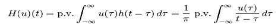
Wavelet Transform
In numerical analysis and functional analysis, a discrete wavelet transform (DWT) is any wavelet transform for which the wavelets are discretely sampled. As with other wavelet transforms, a key advantage it has over Fourier transforms is temporal resolution: it captures both frequency and location information (location in time). The wavelet transform replaces the Fourier transform's sinusoidal waves by a family generated by translations and dilations of a window called a wavelet.It includes two types of wavelets: orthogonal (Haar, Daubechies (dbxx), Coiflets (coifx), Symmlets (symx)) and biorthogonal (Biorthogonal (biorx_x), including FBI (bior4_4 (FBI))), where x indicates the order of the wavelet. The higher the order, the smoother the wavelet.
Chirp-Z Transform
Bluestein's FFT algorithm , commonly called the chirp z-transform algorithm, is a Fast Fourier transform (FFT) algorithm that computes the Discrete Fourier transform (DFT) of arbitrary sizes (including prime sizes) by re-expressing the DFT as a convolution.
IR (Infinite Impulse Response) Filters
Infinite impulse response (IIR) is a property of signal processing systems. Systems with this property are known as IIR systems or, when dealing with filter systems, as IIR filters. IIR systems have an impulse response function that is non-zero over an infinite length of time. This is in contrast to finite impulse response (FIR) filters, which have fixed-duration impulse responses. The simplest analog IIR filter is an RC filter made up of a single resistorfeeding into a node shared with a single capacitor (C). This filter has an exponential impulse response characterized by an RC time constant.
IIR filters may be implemented as either analog or digital filters.Digital filters are implemented in terms of the difference equation as given below:
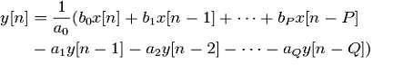
P is the feedforward filter order,
bi the feedforward filter coefficients, Q is the feedback filter order,
ai are the feedback filter coefficients, x[n] is the input signal and
These are commonly referred to as taps (the number of inputs). y[n] is the output signal
FIR (Finite Impulse Response) Filters
Finite Impulse Response filters are one of the primary types of filters used in Digital Signal Processing. FIR filters are said to be finite because they do not have any feedback. To study any Filter we plot 2 graphs - the Magnitude response curve (magnitude vs. frequency curve) and Phase response curve (phase vs. frequency curve).
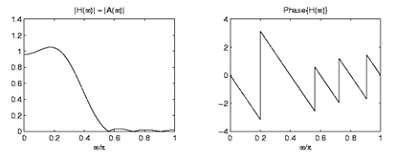
The difference equation that defines the output of an FIR filter in terms of its input is:
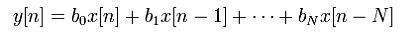
x[n] is the input signal, y[n] is the output signal,
bi are the filter coefficients, also known as tap weights, and N is the filter order - an Nth-order filter has (N + 1) terms on the right-hand side.
Window Implementation
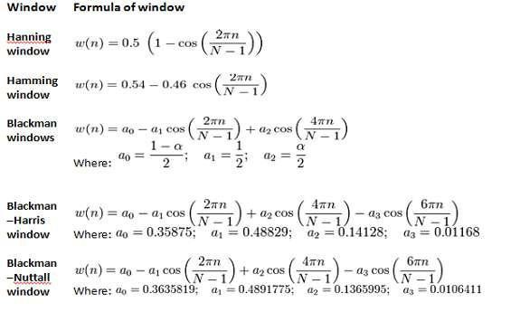
Signal Filtering
Signal filtering involves addition of noise to input signal and then filtering the distorted signal with the help of previous discussed filters.
Median Filter
The median filter is a nonlinear digital filtering technique, often used to remove noise. The Median Filter obtains the elements of Filtered X using the following equation:
yi = Median(Ji) for i = 0, 1, 2, …, n - 1,
Where Y represents the output sequence filtered X, n is the number of elements in the input sequence X,
Ji is a subset of the input sequence X centered about the ith element of X, and the indexed elements outside the range of X equal zero.
Smoothing Filter
Smoothing filters are also called low-pass filters because they let low frequency components pass and reduce the high frequency components. The impulse response of a normal low-pass filter implies that all the coefficients of the mask should be positive. Low-pass filtering in effect blurs the image and removes speckles of high frequent noise. Larger masks will result in more blurring effect. To avoid a general amplification or damping of the data the sum of the filter coefficients should be 1.0.
Many different algorithms are used in smoothing. One of the most common algorithms is the "moving average", often used to try to capture important trends in repeated statistical surveys.
Given a series of numbers and a fixed subset size, the moving average can be obtained by first taking the average of the first subset. The fixed subset size is then shifted forward, creating a new subset of numbers, which is averaged. This process is repeated over the entire data series. The plot line connecting all the (fixed) averages is the moving average. Thus, a moving average is not a single number, but it is a set of numbers, each of which is the average of the corresponding subset of a larger set of data points. A moving average may also use unequal weights for each data value in the subset to emphasize particular values in the subset.
Compression
Acquires a large number of data points and compresses the data points into a smaller number of points by applying reduction methods to input signal on basis of value contained in each segment.
Consider for example: An input sine wave of frequency 30 Hz and amplitude 5V is given to a median filter. Let the reduction factor be 25. This means at a time, 25 data points are taken and the average is taken. Again, this point is plotted and the next 25 data points are considered and the average is taken. This process goes on repeating itself to get the compressed data.
The value -1.00978 specifies the instantaneous mean of the current reduction factor size.